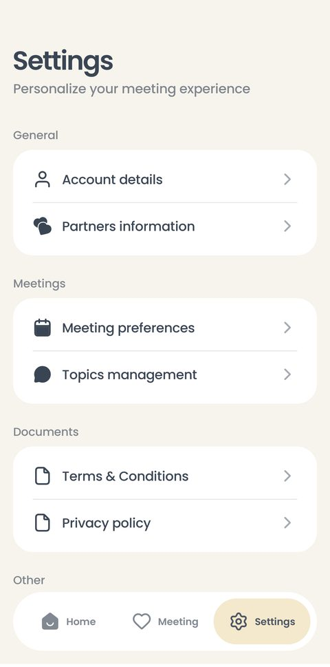
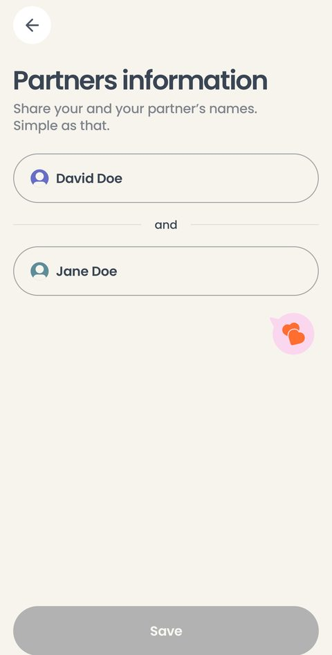
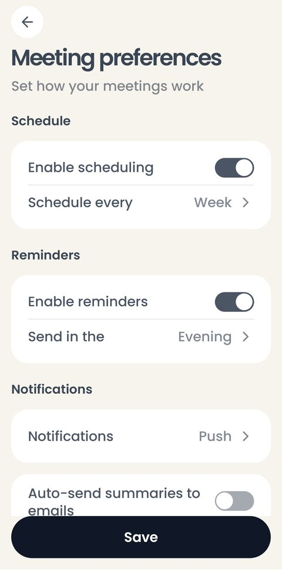
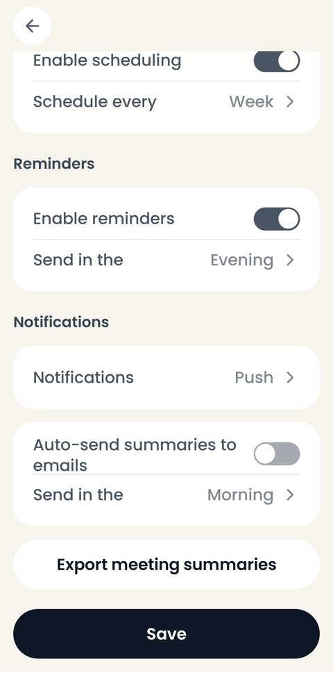
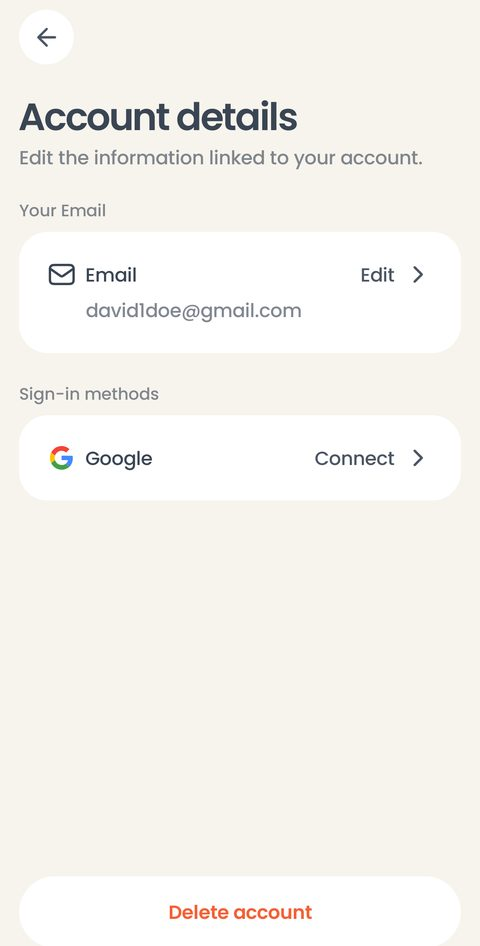
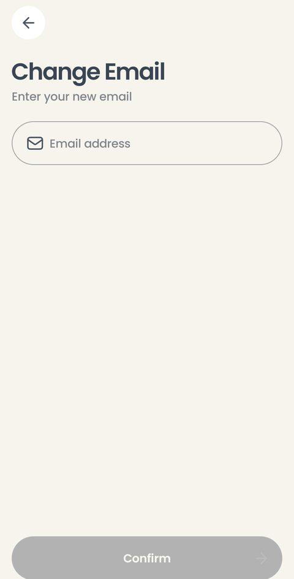
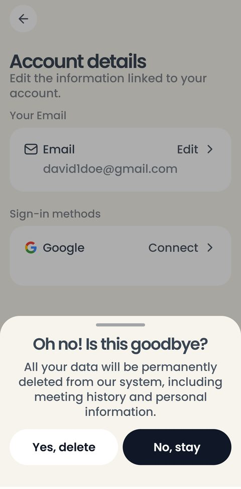
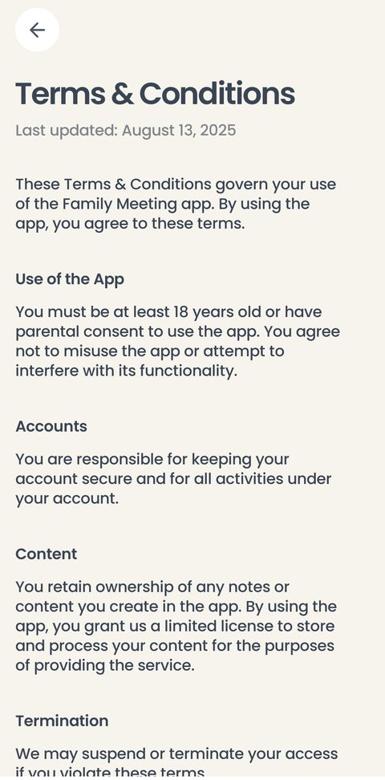
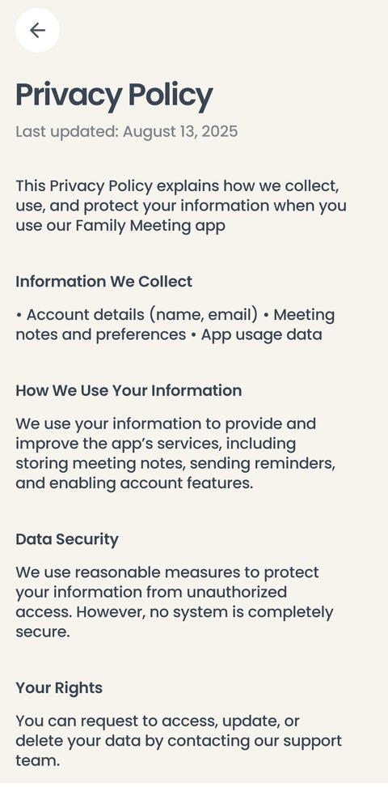
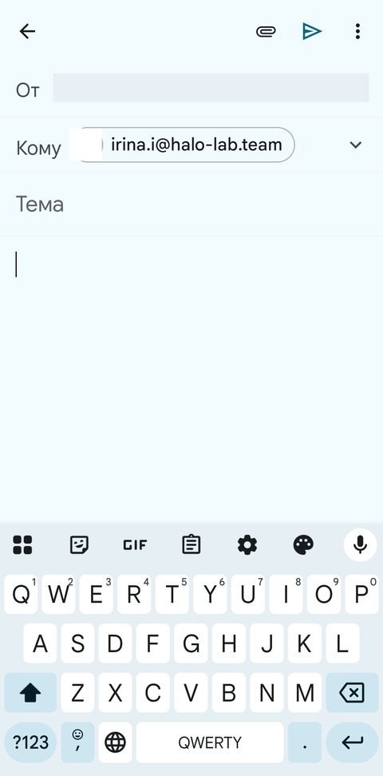

Настройки, напоминания и аккаунт
Третья вкладка таб-бара: имена пары, расписание и напоминания, управление темами, документы, данные аккаунта и его удаление. Здесь же всё, что связано с почтой и с сервером.
Меню

01 Настройки
Восемь пунктов, разложенных по четырём группам:
General — Account details, Partners information.
Meetings — Meeting preferences, Topics management.
Documents — Terms & Conditions, Privacy policy.
Other — Contact us, Log out.
Внизу списка — версия приложения.
Под капотом: в макете весь список нарисован одним кадром высотой 1077 dp; на телефоне он прокручивается под плавающим таб-баром. Сюда же ведёт иконка профиля с главного экрана.
Пара и темы

02 Имена пары
Те же два поля, что в онбординге, — дизайнер рисует эти экраны одинаково. Отличий два: заголовок Partners information и одна кнопка Save, погашенная, пока менять нечего.
Под капотом: имена подставляются во все прошлые встречи тоже — в архиве они не «вморожены» в запись. Длинное имя и имя с эмодзи проверены отдельно: в карточке архива они обрезаются, а не ломают строку.

03 Управление темами
Пункт Topics management: четырнадцать тем с описаниями и тумблерами Included, минимум одна включённая. Порядок меняется перетаскиванием.
Это тот же экран, что открывается перед встречей кнопкой Edit topics and order — разбор есть и в разделе Встреча.
Под капотом: по замыслу заказчика набор тем стабилен неделями, поэтому удобным должно быть именно это место, а не правка на бегу перед разговором.
Расписание и напоминания
Всё, что приложение делает само: напоминает поговорить и отправляет итог письмом.

04 Настройки встреч
Три группы, все с тумблерами и выпадающими значениями:
Schedule — включить расписание и выбрать, как часто: Day, Week, Two Weeks, Month.
Reminders — включить напоминания и выбрать часть суток: Morning, Noon, Evening.
Notifications — чем напоминать: Push, Email или оба сразу; автоотправка итогов на почту и время отправки.
Под капотом: напоминания ставит сам телефон, сервер для этого не нужен — WorkManager, одна работа, которая после срабатывания ставит следующую; выключенный тумблер снимает её с очереди, перезагрузка телефона её не рушит. Части суток — это часы 9, 13 и 20; макет даёт только слова, часы наши, и заказчик их подтвердил. Текст уведомления — «Time for your meeting. Fifteen minutes, just the two of you» — тоже наш: уведомлений в макете не нарисовано вовсе.
Осторожно с этим экраном: в актуальной версии макета его нет — он остался в старой, в размере 375×812, и приведён к сетке Version 2 нами. Вопрос, перерисует ли его дизайнер, открыт.

05 Автоотправка и выгрузка
Низ того же экрана. Auto-send summaries to emails с выбором времени — итог уходит письмом сам, без нажатия на кнопку в конце встречи. Ниже — Export meeting summaries: вся история простым текстом через системное «Поделиться».
Внизу закреплена кнопка Save: настройки применяются по ней, а не по каждому переключению.
Под капотом: автоотправка ставится на выбранный час и ждёт сети — если интернета нет, письмо уйдёт позже само. Формат выгрузки заказчик подтвердил: простой текст, без файлов и таблиц.
Аккаунт

06 Данные аккаунта
Your Email с кнопкой Edit, Sign-in methods с Google и кнопкой Connect, внизу красная строка Delete account.
Apple в списке нет: входа через него в приложении нет, а рисовать строку, которая ничего не делает, хуже, чем не рисовать.
Под капотом: адрес берётся из сессии, длинный обрезается многоточием. Google подключается только «адрес в адрес»: чужой аккаунт увёл бы пару в другую учётную запись со всей её историей, и приложение отказывает словами. Отключить Google можно, если остаётся хотя бы один способ войти.

07 Смена почты
Новый адрес, кнопка Confirm — и тот же экран с шестизначным кодом, что при входе. После подтверждения приложение говорит, что адрес обновлён.
Под капотом: проверено живьём дважды — адрес сменён и возвращён обратно. На сервере ради этого пришлось выключить «Secure email change», иначе писем и кодов приходило по два, и вписать код в шаблон письма о смене адреса.

08 Удаление аккаунта
Диалог Oh no! Is this goodbye? — «все данные будут удалены навсегда, включая историю встреч и личную информацию». Кнопки Yes, delete и No, stay. После удаления приложение выбрасывает на экран входа.
Под капотом: удаляет серверная функция: служебный ключ не должен покидать сервер, поэтому телефон только доказывает токеном, кто он. Порядок важен — сначала ответ сервера, потом стирание телефона. Проверено живьём: вход тем же адресом после удаления даёт новую пустую учётную запись, а не старую историю.
Документы и поддержка

09 Условия
Полный текст условий с датой последнего обновления. Сюда же ведёт пилюля Learn more из формы согласия при первом запуске.
Под капотом: текст взят из макета дословно — сочинять ничего не пришлось. Это закрыло вопрос, который висел с недели 7: без текста кнопка «Learn more» вела в никуда, и её не было.

10 Политика конфиденциальности
Что собирается, как используется, как защищается и какие у пользователя права. Тоже дословно из макета.
Под капотом: оба документа отличаются от кадра Figma только переносами строк: Poppins на телефоне помещает в строку на слово больше, чем Figma, и на странице текста это набегает.

11 Написать в поддержку
Строка Contact us открывает почтовый клиент телефона с уже вписанным адресом поддержки. Своего экрана переписки в приложении нет — в макете нарисован именно почтовый клиент.
На снимке закрашены строка отправителя и его фотография: это личные данные владельца телефона, а не часть приложения.
Под капотом: если почтового клиента на телефоне нет вовсе, открывать нечего — приложение об этом молчит. Это случай, которого в макете нет.
12 Выход из аккаунта
Последняя строка меню. Выход возвращает приложение на экран входа.
Под капотом: выход не стирает историю: она остаётся на телефоне и ждёт. Вход тем же адресом покажет её на месте, вход другим — очистит телефон, потому что данные пары привязаны к учётной записи.
Что стоит знать про этот раздел
Размер шрифта системы
Приложение следует системному размеру текста. Тёмной темы нет: в макете её не нарисовано.
Ящик отправителя
Письма уходят с ящика разработчика — это времянка. К релизу нужен домен или ящик заказчика.
Данные лежат на телефоне
Сервер знает только учётную запись и адрес почты. Настроение, планы и благодарности не покидают устройство, кроме письма с итогом, которое пара отправляет сама.